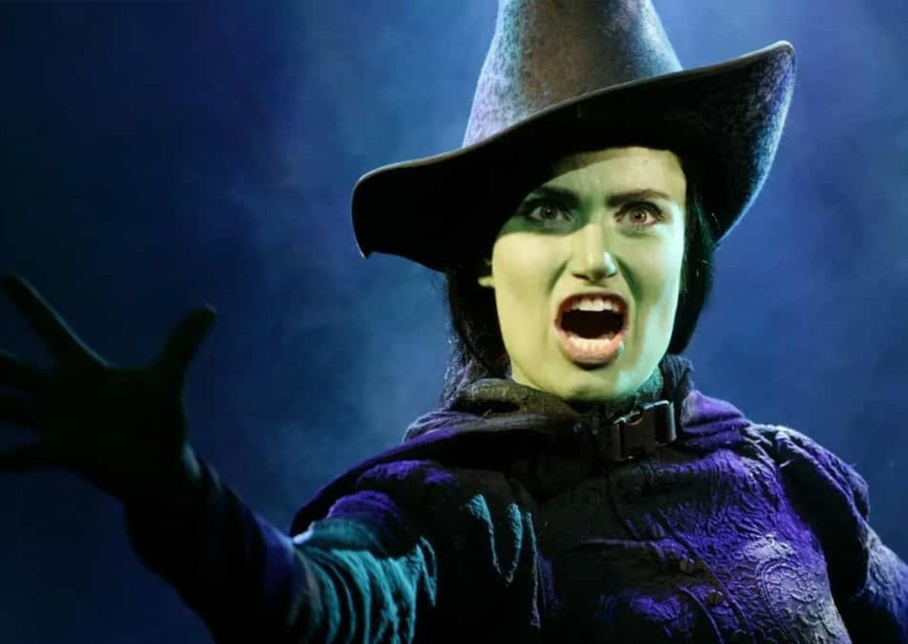

Foto — De internet
Notícia
Musical “Wicked” completa hoje 20 anos em cartaz na Broadway
Prestes a virar filme com duas partes e Ariana Grande no elenco, um dos musicais mais aclamados e amados da Broadway, Wicked, completa 20 anos em cartaz.…